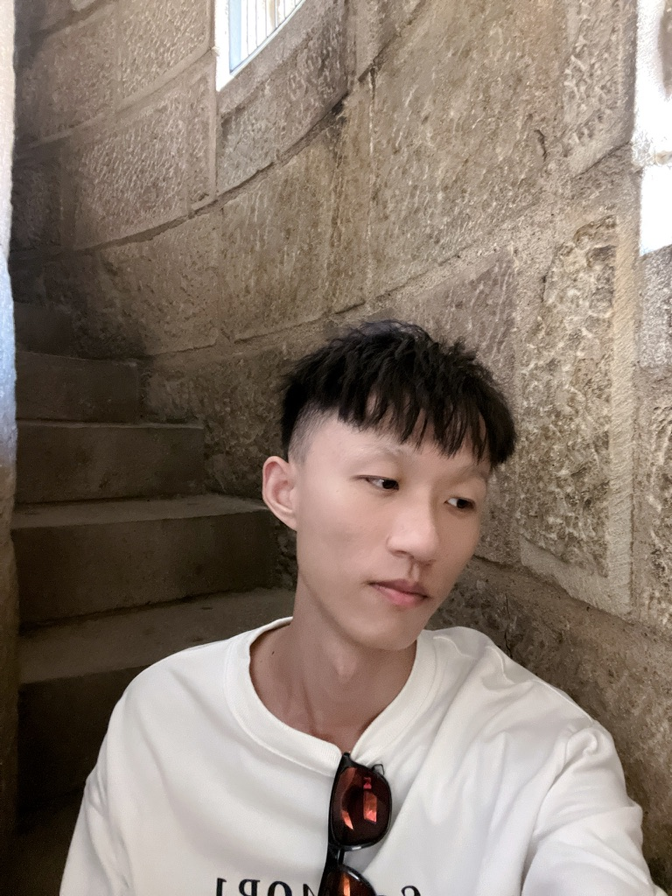

News
August 2023
I joined Meituan as an algorithm engineer.
July 2023
I will serve as a PC member for AAAI 2024.
June 2023
One paper is accepted by ECML-PKDD'23 about Bayesian networks.
June 2023
I passed my PhD defense.
May 2023
One paper is accepted by ICWS'23 about social recommendation.
September 2022
One paper is accepted by ICDM'22 about user interest modeling and online advertising.
August 2022
I will serve as a PC member for AAAI 2023.
July 2022
I got Recognition Award of 2021 Tencent Rhino-Bird Research Elite Training Program.
June 2022
I got student travel grant of SIGIR 2022.
April 2022
One paper is accepted by SIGIR'22 about CTR prediction and online advertising.
|  |
Zuowu Zheng
Algorithm Engineer
Advertising Platform Group
B-Link T6 Building
zhengzuowu AT meituan.com, wozhengzw AT gmail.com
• CV • Google Scholar • GitHub |
I am currently an algorithm engineer in Meituan, focusing on recommender system for online advertising platform, especially user interest modeling, auction design, bidding strategies, and social recommendation. Prior to that, I received my Ph.D. degree from the CS department, Shanghai Jiao Tong University (SJTU) in June 2023, advised by Prof. Xiaofeng Gao. I was a visiting research scholar in the N-CRiPT, National University of Singapore (NUS) from January 2022 to January 2023, advised by Prof. Anthony K. H. Tung. I was a research intern at Tencent TEG in 2021. I received B.E. in Computer Science from Ocean University of China (OUC) in June 2018, where I was advised by Prof. Yingjian Liu.
Education
| Shanghai Jiao Tong University (SJTU) Ph.D. in Computer Science Sept. 2018 - Jun. 2023, Shanghai, China Advisor: Prof. Xiaofeng Gao |
| National University of Singapore (NUS) CSC Visiting Ph.D. Student in Computer Science Jan. 2022 - Jan. 2023, Singapore Advisor: Prof. Anthony K. H. Tung |
| Ocean University of China (OUC) B.E. in Computer Science Aug. 2014 - Jun. 2018, Qingdao, China Advisor: Prof. Yingjian Liu |
Publications
| NGA: Non-autoregressive Generative Auction with Global Externalities for Advertising Systems
Zuowu Zheng, Ze Wang, Fan Yang, Wenqing Ye, Weihua Huang, Wenqiang He, Teng Zhang, Xingxing Wang arXiv preprint arXiv:2506.05685, June 2025. |
| EGA-V2: An End-to-end Generative Framework for Industrial Advertising
Zuowu Zheng, Ze Wang, Fan Yang, Jiangke Fan, Teng Zhang, Yongkang Wang, Xingxing Wang arXiv preprint arXiv:2505.17549, May 2025. |
| EGA-V1: Unifying Online Advertising with End-to-end Learning
Junyan Qiu, Ze Wang, Fan Zhang, Zuowu Zheng, Jile Zhu, Jiangke Fan, Teng Zhang, Haitao Wang, Yongkang Wang, Xingxing Wang arXiv preprint arXiv:2505.19755, May 2025. |
| RBNets: A Reinforcement Learning Approach for Learning Bayesian Network Structure
Zuowu Zheng, Chao Wang, Xiaofeng Gao, and Guihai Chen The European Conference on Machine Learning and Principles and Practice of Knowledge Discovery in Databases (ECML-PKDD), Turin, Italy, September 18-22, 2023. |
| ExpoEv: Enhancing Social Recommendation Service with Social Exposure and Feature Evolution
Li Ma, Zuowu Zheng, Xiuqi Huang, Zhaoxiang Zhang, Xiaofeng Gao, Jianxiong Guo, and Guihai Chen IEEE International Conference on Web Services (ICWS), Chicago, USA, July 2-8, 2023. |
| AutoAttention: Automatic Field-Pair Selection for Attention in User Behavior Modeling
Zuowu Zheng, Xiaofeng Gao, Junwei Pan, Qi Luo, Guihai Chen, Dapeng Liu, and Jie Jiang The 22nd IEEE International Conference on Data Mining (ICDM), Orlando, USA, November 28 – December 1, 2022. (Full) |
| HIEN: Hierarchical Intention Embedding Network for Click-Through Rate Prediction
Zuowu Zheng, Changwang Zhang, Xiaofeng Gao, and Guihai Chen The 45th International ACM SIGIR Conference on Research and Development in Information Retrieval (SIGIR), Madrid, Spain, July 11-15, 2022. (Full) |
| Predicting Hot Events in the Early Period through Bayesian Model for Social Networks
Zuowu Zheng, Xiaofeng Gao, Xiao Ma, and Guihai Chen IEEE Transactions on Knowledge and Data Engineering (TKDE), Volume 34, Issue 3, pp.1390-1403, March 1, 2022. |
| Social Circle and Attention Based Information Popularity Prediction
Zuowu Zheng, Siqi Shao, Xiaofeng Gao, and Guihai Chen Chinese Journal of Computers (计算机学报), Volume 44, Number 5, May 2021. |
| Popularity Prediction for Single Tweet based on Heterogeneous Bass Model
Xiaofeng Gao, Zuowu Zheng, Quanquan Chu, Shaojie Tang, Guihai Chen, and Qianni Deng IEEE Transactions on Knowledge and Data Engineering (TKDE), Volume 33, Issue 5, pp.2165-2178, May 1, 2021. |
| SATP: Sentiment Augmented Topic Popularity Prediction on Social Media
Weizhi Gong, Zuowu Zheng, Xiaofeng Gao, and Guihai Chen The 17th International Conference on Service Oriented Computing (ICSOC), Toulouse, France, October 28-31, 2019. (Poster) |
Internships
| Tencent TEG (Wechat Industry Ad Group) Research Intern Jun. 2021 – Dec. 2021, Shenzhen, China Mentor: Changwang Zhang
|
| Tencent TEG (Wechat Ad Ranking Group) Research Intern Dec. 2020 – Jun. 2021, Shenzhen, China Mentor: Junwei Pan
|
Honors and Awards
|
Academic Services
|
Useful Links
| AI Conference Deadlines |
| Tmall dataset of IJCAI 2015 Contest |
| Ad Click Data on Taobao |
| Machine Learning Reading List |
| Deep Learning Reading List |
Last update: June 01, 2025. Webpage template borrows from Prof. Xiangnan He.